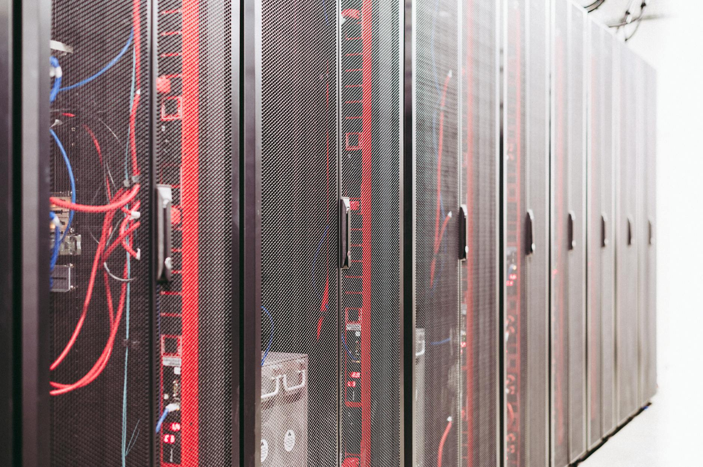

一、把 Anthropic 这个月的账单摊开
先做一道小学算术。
Anthropic 现在签出去的、白纸黑字的云算力承诺，按三家来算：
Amazon AWS：未来 10 年承诺花 1000 亿美金。这单是 4 月 20 号签的，紧跟着 Amazon 宣布最高再投 250 亿到 Anthropic。 Google Cloud：未来 5 年承诺花 2000 亿美金。这单 5 月 5 号曝光，配套是 Google 现在掏 100 亿现金，根据业绩里程碑最高加到 400 亿。包含一百万颗 TPU。 Microsoft Azure：300 亿美金算力承诺。Microsoft 同步投 50 亿。加起来，3300 亿美金。
我再说一遍，三千三百亿美金。
这是 Anthropic 自己签字、加盖公章、摁过手印的应付账款。
那 Anthropic 自己一年能挣多少？
公司 4 月份对外说，年化营收(ARR)冲到 300 亿了。这数还是 Q1 一个季度的"超级窗口期"年化出来的，按月的话——1 月 87 亿、2 月 140 亿、3 月 190 亿、4 月 300 亿。
收入年化 300 亿，账单 3300 亿。
比例是 1 比 11。
你要是个普通打工人，月薪 1 万，跑去签了一份 11 万的房贷月供，银行不会笑你大胆，会直接把你合同撕了——你这不是借贷，你这是行为艺术。
但 Anthropic 把这事儿干成了。
而且签得三家云厂商抢着送钱进来。
二、那 3000 亿的差额，谁出？
来看钱怎么进来的。
三家云厂商各自捏一份投资协议进 Anthropic 公司：
Amazon 这次说要再投 250 亿，加上之前已经投的 80 亿，AWS 累计能进 330 亿。
Google 这次答应进 100 亿，业绩达标的话加到 400 亿。算最大值就是 400 亿。
Microsoft 这次进 50 亿。
总计最大值 780 亿。
中间那笔 2500 亿的差额怎么补？
Anthropic 4 月底刚谈一轮新融资，500 亿美金估值打到 9000 亿——比上一轮 1830 亿翻了快 5 倍。这 500 亿要是拿到了，加上前面云厂商的 780 亿，大概 1300 亿。
还差 2000 亿。
这 2000 亿，按照公司自己给投资人的财务规划，靠"未来营收"补——Dario 说 2027 年开始正现金流，2028 年营收 700 亿，2029 年继续翻倍。
翻译一下：
这 3300 亿账单，本质上是 Anthropic 拿"我未来一定爆发"作为质押品，跟三家云厂商签的远期算力期货。
云厂商这边，表面上是给 Anthropic 投钱，实际上在做一件更精明的事——
把自家未来 5 到 10 年的云收入，提前以"backlog 确认"的方式锁定，再把这笔确认收入挂上自家财报。不信你看 Google 4 月 29 号公布的 Q1 财报，云业务 backlog 一夜从 2400 亿干到 4620 亿，几乎翻倍。Anthropic 这一单 2000 亿，占了 backlog 的 43%。
Sundar Pichai 在电话会上一句话点透：「我们短期内是算力不足的（compute constrained）」。
翻译过来就是：我家的云不愁卖，连 Anthropic 这种没爹的孩子都抢着排队签 5 年长约。
资本市场看到这个数字，Alphabet 股价当天冲到历史高点 399 美金。
老铁们，这就是商业的本质。
云厂商投 Anthropic 的钱，最终通过算力账单又流回云厂商的财报。
中间这一圈，叫"循环交易"——英文术语 Circular Financing，更贴切的中文翻译叫"左手倒右手，倒一圈估值翻三倍"。
三、Anthropic 的客户是谁，撑得起这账单吗
怀疑论者会站起来反驳：
「兄弟你别瞎说，AI 是真有需求的。Anthropic 营收一年涨 80 倍，那是真有人在掏钱用。」
对，这话半对半错。
营收 300 亿是真的——但你要是把这 300 亿拆开来看，会看到一件让所有 SaaS 风控经理头皮发麻的事。
公开数据：Anthropic 的 API 业务里，Cursor 一家加 GitHub Copilot 一家，两家加起来贡献 14 亿美金 ARR，占整个 API 收入的近一半。
什么概念？
任何一家正经 SaaS 公司去美股 IPO，承销商问的第一个问题就是「客户集中度」。一般规则是：前 5 大客户占比超过 30%，路演就会被反复拷问；超过 40%，估值得砍 20% 起步；超过 50%，多半上不了市。
Anthropic 这边，前 2 家客户就接近 50% 了。
更要命的是，Cursor 自己也是个嗷嗷烧钱的代码补全工具，它收用户的钱，转手就交给 Anthropic 当 API 费用。它一家 ARR 大概 5 亿美金水平——意思是它收用户 5 亿，给 Anthropic 大概 8-10 亿，自己倒贴。
GitHub Copilot 是 Microsoft 旗下的，Microsoft 早就把它当成战略亏损项目在跑——用户付一个月 10 美金的会员费，Microsoft 后台调用 Anthropic 的 API 成本经常超过 30 美金。
所以这条链子完整画下来是这样的：
云厂商 →（投资）→ Anthropic →（API 调用费）→ 云厂商账单 backlog 普通用户 → Cursor / Copilot → Anthropic → 云厂商账单 backlog第一条循环是封闭的，账面上左手倒右手。
第二条循环是开放的，但 Cursor 和 Copilot 自己也在亏损，本质上是用 VC 的钱、Microsoft 的钱，替终端用户支付了一部分账单。
真正能从用户钱包里直接抽到现金、不需要任何中转的部分，估计连 30% 都不到。这就是为什么我说，Anthropic 不是 AI 公司，是云厂商之间的资金通道。
它不是恶意的，它甚至不是故意的——它是这个生态系统里所有玩家把它推到这个位置上的。
四、那 5 月 7 号租 Elon Musk 数据中心又是什么操作
可能有同学会问：
「那 5 月 7 号 Anthropic 又跑去租 SpaceX 名下的 Colossus 1，签的是 22 万张 H100，这事儿怎么解释？」
这事儿才是这篇文章的高潮。
老铁们注意，Anthropic 跟三大云厂商签的所有长期合同，全是 5 年起步、10 年封顶。
但模型训练等不了 10 年。
Claude 4.5 训练的时候用 Trainium，4.6 用 TPU，5.0 用 H100——每一代模型对算力的需求是阶跃的，今年要的卡明年可能就过时。
三家云厂商的"算力承诺"，在合同上写得是一笔总数，但真正交付的节奏跟不上 Anthropic 训练的节奏。
Sundar Pichai 自己都说了「我们 compute constrained」——意思是 Google 自家的客户都嗷嗷待哺，Anthropic 排队也得排着。
这时候市场上还有一个人捏着 22 万张 H100 没地方用——
Elon Musk。他 1 月份新搞了 Colossus 2，把 xAI 自己的训练任务都迁过去了，Colossus 1 这套 22 万张 H100、300 兆瓦的家伙，正闲着。
Anthropic 直接包圆。
我请你品一下这个画面：
Anthropic 的 CEO 说"我跟 Google 签了 2000 亿的算力大单"，转头第二天就跑去租 Elon Musk——这位整天起诉 OpenAI、跟 Sam Altman 互喷、自己搞 xAI 跟 Anthropic 抢生意的男人——的数据中心，还要把人家的算力全包。
Musk 自己出来说话，原话是：「No one set off my evil detector（没人触发我的邪恶探测器）」。
翻译一下：这单生意我也想不通有什么阴谋，所以我就先收钱了。
这事儿告诉我们一个非常残酷的真相——
3300 亿的云算力承诺，是签给三家云厂商的财报看的；眼前训练 Claude 5 缺卡的事儿，得另外找一个对手家先租。合同是给资本市场看的故事，租赁是真金白银的现实。
而真金白银的现实，是 Anthropic 现在缺卡缺到要跟 Elon Musk 这样八字不合的人合作。
这就好比某地产公司一边对外宣传"未来五年累计开工 3000 万平方米"，一边偷偷去找隔壁同行租水泥搅拌机——大单是给股价看的，搅拌机是给工地用的。

五、为什么所有人都得继续转下去
这一局牌，最迷人的地方在于：没有任何一方有动机停下来。
我把每一方的真实诉求摊开来看：
云厂商需要 backlog 故事。 Google Q1 财报为什么涨那么猛？因为 backlog 翻倍。Wall Street 看 SaaS 公司从来不只看当期收入，看的是"未来已锁定的合同金额"——这玩意儿涨，估值就涨。Anthropic 这一笔 2000 亿，相当于直接给 Alphabet 估值添了几千亿燃料。AWS 拿 1000 亿、Azure 拿 300 亿，逻辑一样。所以三家云厂商抢着签，价格都不带还的。 Anthropic 需要算力训练下一代模型。 没有算力，没有 Claude 5、Claude 6。没有更强的模型，竞争里就没位置。所以 Anthropic 必须把所有能拿到的卡都签上。哪怕是 Elon Musk 的卡。 投资人需要"AI 是真需求"的故事。 Anthropic 估值从 1 月份的 1830 亿到 4 月份谈到 9000 亿，半年涨 5 倍。投资人手里持有的份额每涨一次估值，账面浮盈一次。账面浮盈又能被打包成基金业绩，去筹下一只更大的基金。基金管理费 2%，超额收益分成 20%——这一连串的财务魔术，靠的就是估值不停往上跑。 美国监管层（理论上）应该有动机停。 但是没有。5 月 5 号同一天，美国政府宣布跟 Google、Microsoft、xAI 达成协议，让政府机构在模型上线前预先评估——表面上是"AI 安全监管"，实际上是把美国的 AI 公司绑得更紧，因为非美国的对手（中国、欧洲）现在被定义成"安全威胁"。监管不是要阻止这事儿，而是要确保这事儿留在美国境内继续转。 终端用户呢？ 这是这个故事里唯一的悬念。到现在为止，3300 亿账单背后，真正掏钱的终端用户付费规模有多大？不知道。Anthropic 不公开。但根据其披露的 1000 多家"百万美金以上年支出"客户，按平均 200-300 万一家算，这部分加起来大概 30 亿——只占公司声称的 ARR 的 10%。
剩下 90% 的 ARR，靠的是 Cursor 这种烧钱中间商，靠的是云厂商内部账面流转，靠的是 Anthropic 自己烧投资人的钱再变成 API 调用——那不是营收，那是流水。整个链条最薄的那一环，是终端用户的钱包。
只要这个钱包里掏不出足够的现金来填那个 2000 亿到 3000 亿的差额，循环就要靠"下一轮融资"或"下一笔投资"来续命。
只要任何一个环节——某家云厂商决定不投了、某轮融资没到位、某个客户跑路了——这条传送带就会卡住。
六、那这事儿啥时候出问题
核心问题来了：这个"接力棒"游戏，到底什么时候停？
我的判断里有三个观察点。
第一个观察点：某家云厂商先扛不住。3300 亿的算力承诺，意味着每年 Anthropic 要从云上消耗 660 亿美金——这数字大于 Google 整个 Cloud 业务 Q1 营收的 3 倍。如果 Anthropic 真的按这个节奏花，三家云厂商必须建出对应规模的数据中心。
但建数据中心要钱、要电、要地、要 GPU。前不久 Oracle 宣布跟 OpenAI 签了 3000 亿大单，市场反应是 Oracle 股价两个月跌了 45%——投资人一算账，建这么多数据中心，资本开支会吞掉 Oracle 接下来几年的全部自由现金流。
Google、Amazon、Microsoft 当下还撑得住，因为他们家底厚。但 5 大云厂商 2026 年合计资本开支已经飙到 6900 亿美金，同比翻倍。这速度撑不了三年。
第二个观察点：终端用户付费疲软。OpenAI 今年公开了一组数据，9 亿月活用户里只有 5% 付费。换句话说，绝大部分人用 AI 用得很爽，但不愿意掏钱。
企业端付费的天花板也在显现——Anthropic 上周公布的 B2B Signals 报告里说，"前沿企业（frontier companies）的人均 AI 用量是普通公司的 3.5 倍"——这话翻过来就是「普通公司根本没那么多 AI 需求」。
如果 2027 年还看不到 Anthropic 端到端用户付费的爆发，循环就要靠继续烧投资人的钱来维持。
第三个观察点：监管态度变化。美国政府现在的逻辑是"留在境内随便转"，但这个逻辑能维持多久？
如果哪天某个州检察长（比如纽约或加州）盯上 Nvidia + 云厂商 + AI 创业公司这种三方循环，按照 SEC 历史上对 round-tripping（虚增交易）的判例标准来审视，这条链条里至少 30% 的"营收"是经不起严格审计的。
不是说 Anthropic 在做假账——它的合同都是真的，钱也是真的转过去的。但是这种"我投资你、你买我服务、我把买我服务的钱算成 backlog"的结构，SEC 在 2000 年互联网泡沫破灭后追究过一连串案例，被点名的包括 Lucent、Nortel、Qwest——每一次都是先赞美"循环效应是新经济的伟大创新"，然后大潮退去，对账。
历史不一定重演，但财务魔术的剧本不变。
七、收束：别看模型，看金主名单
最后说回开头那个判断。
Anthropic 真正在卖的不是 Claude，是云厂商之间的资金接力棒。
这话听起来刻薄，但它不是在批评 Anthropic——Anthropic 团队是这个行业里最严肃做研究的一批人，模型质量也确实不错。
这话是在说，当你看到一家 AI 公司估值 9000 亿、营收 80 倍增长、合同 3300 亿的时候，你不能只看这些数字。
你要看：
第一，它的金主名单里有没有云厂商。如果有，且持股比例排前 5，那它的"营收"很可能有相当一部分是从金主那儿借的——金主借给它，再让它买金主的服务。
第二，它的合同条款里有没有 cloud commitment（必须使用某家云）。如果有，这家公司的算力供应链就被锁死了，所谓的"自由议价"就是个笑话。
第三，它的客户集中度。前 2 大客户超过 30%、且这两个客户自己也是亏损的——这家公司的现金流其实是被绑在另外两家公司身上，绑得越紧风险越大。
这三条用下来，你能筛掉市面上 90% 看着光鲜的 AI 公司。
剩下那 10%，才是真正的技术公司。
至于 Anthropic 这一局牌怎么收尾——
我赌不了哪一年破，但我能告诉你它怎么破：
某一天，某家云厂商在某次财报会上轻描淡写地说一句「我们调整了对 Anthropic 的承诺规模」。那一天，整条传送带就停了。
到时候 Dario Amodei 不会站出来道歉，他会说"我们一直在说，AI 的发展需要长期视角"。
投资人不会承认看走眼，他们会说"AGI 是十年后的事，短期波动正常"。
监管不会问责，监管会发新一轮"AI 治理框架"。
而真正接盘的，是那些拿养老金 401(k) 把钱被动配置到 Alphabet、Amazon、Microsoft 这些云厂商股票的普通人。
老铁们，到那天再回头看这篇文章。
我现在能给你的唯一建议是——
当一家公司的应付账款是它营收的 11 倍，无论它叫 AI 还是叫别的什么，先看看是谁在给它兜底。兜底的人，永远比模型本身更重要。
完。